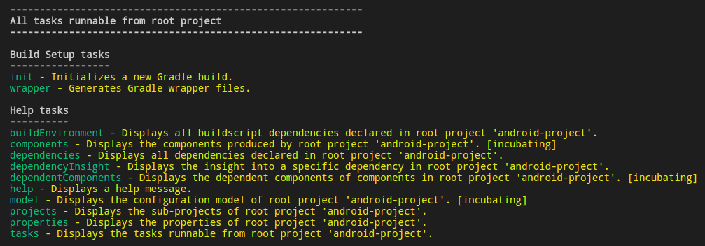

简介
Gradle 是一个基于 Apache Ant 和 Apache Maven 概念的项目自动化建构工具。它使用一种基于 Groovy 的特定领域语言 (DSL) 来声明项目设置，抛弃了基于 XML 的各种繁琐配置。
-
一个像
ant一样，通用的灵活的构建工具 -
一种可切换的，像
maven一样的基于约定约定优于配置的构建框架 -
强大的多工程构建支持
-
强大的依赖管理(基于
ApacheIvy) -
对已有的
maven和ivy仓库的全面支持 -
支持传递性依赖管理，而不需要远程仓库或者
pom.xml或者ivy配置文件 -
ant式的任务和构建是gradle的第一公民 -
基于
groovy，其build脚本使用groovy dsl编写 -
具有广泛的领域模型支持你的构建
Gradle 用户手册 -- 官网原文 -- 1.12版本中英对照 -- 1.12版本本地副本
1. 构建基础
1.1 项目文件 -- Gradle 项目配置文件主要为如下几个:
-
~/.gradle/init.gradle-- 此文件为全局初始化执行文件，启动任何一个构建前都要先执行这个文件，可以在做一些全局的配置。更多配置查看 Gradle 对象。// 在此文件中 Gradle 已经初始化，因此可以使用 Gradle 的属性和方法 println gradle.getHomeDir println getHomeDir /** 另外，还有相似的两个文件，按如下顺序加载 * 1. 加载 ~/.gradle/init.gradle 文件 * 2. 加载 ~/.gradle/init.d/ 目录下的以 .gradle 结尾的文件 * 3. 加载 $GRADLE_HOME/init.d/ 目录下的以 .gradle 结尾的文件 */
-
~/.gradle/gradle.properties-- 此文件全局属性配置文件，比如配置是否启动 daemon 配置，另外，在此文件中配置的属性，全局可用。// 这个属性配置启动 Gradle daemon org.gradle.daemon=true // 这两个属性配置供其它项目使用 author=jiwanger mail=jiwanger@126.com
-
settings.gradle-- 此文件主要用于多项目配置，位于根项目下，配置项目包含哪些子项目，配置子项目的共有配置。更多配置查看 Settings 对象。// 这两个属性配置在 ~/.gradle/gradle.properties 文件中 println author println mail // Settings 有一个 Gradle 的属性，前一步已经初始化 println gradle.gradleHomeDir // Settings 已经初始化，因此可以使用 Settings 的属性和方法 println rootProject.name println settings.rootProject.name
-
build.gradle-- 为项目的默认配置文件，更多配置查看 Project 对象。 -
gradle.properties-- 此文件为项目属性配置文件，在此文件中配置的属性，在build.gradle中可用。 -
gradlew | gradlew.bat-- 作用是根据gradle-wrapper.properties文件中的 distributionUrl 下载对应的 gradle 版本。这样就可以保证在不同的环境下构建时都是使用的统一版本的 gradle，即使该环境没有安装 gradle 也可以，因为 gradle wrapper 会自动下载对应的 gradle 版本。如果从别处下载的项目，包含这些文件，应该使用./gradlew taskName去运行构建。 -
gradle/wrapper/gradle-wrapper.jar-- 运行 gradlew 时，如果没有对应的 gralde 版本，gradle-wrapper 会自动下载对应的 gradle 版本。 -
gradle/wrapper/gradle-wrapper.properties-- 此文件为自动生成，用于配置指定版本的 Gradle 下载地址和下载后存放位置，内容如下：#Fri Jun 16 09:05:48 CST 2017 # 下载的版本解压后基础位置存放于 ~/.gradle/ 目录 distributionBase=GRADLE_USER_HOME # 下载的版本解压后具体位置存放于 wrapper/dists 目录, 结合上面就为：~/.gradle/wrapper/dists distributionPath=wrapper/dists # 下载的 zip 文件存放基础位置为 ~/.gradle/ zipStoreBase=GRADLE_USER_HOME # 下载的 zip 文件存放具体位置为 wrapper/dists , 结合上面就为：~/.gradle/wrapper/dists zipStorePath=wrapper/dists # 下载地址 distributionUrl=https\://services.gradle.org/distributions/gradle-2.14.1-bin.zip
如想更改用于构建的 Gradle 版本，在任何目录下直接运行
$ gradle wrapper --gradle-version 3.0, 也会生成指定版本的 Wrapper 相关文件。也可在根目录的build.gradle文件中加入如下内容：task wrapper(type: Wrapper) { gradleVersion = '3.0' // 指定用于构建的 gradle 版本 }然后运行
gradle wrapper, 此命令会下载 3.0 版本的 Gradle, 然后运行时，使用./gradlew task运行构建。
1.2 构建的生命周期 -- Gradle 构建三个明显的阶段：
-
初始化 -- 构建初始化时创建 Gradle 对象，整个构建执行过程中只有这么一个对象，主要有两个文件配置规则：
~/.gradle/init.gradle和~/.gradle/gradle.properties。Gradle 支持单项目及多项目的构建。在初始化阶段，Gradle 确定哪些项目是需要构建的，执行settings.gradle, 转换成一个 Settings 对象，并为每个需要构建的项目创建一个 Project 对象实例。 -
配置 -- 在这一阶段，对 project 对象进行配置，确定 Project 和 Task 的关系，建立一个有向图来描述 Task 间的依赖关系。属于构建的所有 projects 的
build.gradle都会被执行。通过build.gradle来配置上一步的 Project 对象。 -
执行 -- Gradle 确定在配置阶段中，创建和配置的要被执行的任务的子集。这个子集是由传递给 gradle 命令的任务名称参数和当前目录所决定的。然后 Gradle 执行每个选定的任务。
Gradle 生命周期中的一些回调方法：
/** 归纳总结：
* gradle.settingsEvaluated 和 gradle.projectsLoaded 只执行一次,在 settings.gradle 中才有效,还没加载 build 文件
* gradle.beforeProject 在每个项目配置前启动，有多少项目执行多少次
* gradle.afterProject 在每个项目配置后启动，有多少项目执行多少次
* project.beforeEvaluate 当此项目被配置前马上执行，注意：直接写在本项目中，不会调用，因为还未配置，只能在父工程中使用
* project.afterEvaluate 当此项目被配置后马上执行，和 gradle.afterProject 相比，它只关心本身所在的项目
* gradle.projectsEvaluated 所有项目被配置完成后执行，执行完它后，就应该去执行指定的 task 了
* gradle.buildFinished 在所有构建执行完成后执行，settings.gradle 和 build.gradle 中都有效
*/
/** 添加一个闭包, 当 settings.gradle 被加载并被配置时被调用 */
gradle.settingsEvaluated {}
/** 添加一个闭包, 当所有项目从 settings 中创建时调用 */
gradle.projectsLoaded {}
/** 添加一个闭包, 当项目被配置前马上执行 */
gradle.beforeProject {}
/** 添加一个闭包, 当项目被配置后马上执行 */
gradle.afterProject {}
/** 添加一个闭包, 当所有项目被配置完成后执行，执行完它后，就应该去执行指定的 task 了 */
gradle.projectsEvaluated {}
/** 构建完成后执行 */
gradle.buildFinished {}
/** 添加一个闭包, 当此项目被配置前马上执行
* 和 gradle.beforeProject 相比，它只关心本身所在的项目
* 只能在父工程中的 build.gradle 中使用，因为本工程还未配置
*/
project.beforeEvaluate {}
subprojects { // 此代码只能写在要配置的项目父工程下
if(it.path.equals(":sub-project")) {
it.beforeEvaluate { // 在这里应用 beforeEvaluate 回调
println "Evaluate before of "+ it.path
}
}
}
/** 添加一个闭包, 当此项目被配置后马上执行，
* 和 gradle.afterProject 相比，它只关心本身所在的项目
*/
project.afterEvaluate {}
/**
* 项目结构为: 一个主项目，一个子项目，以下为这些回调方法的执行顺序：
* settings: 表示此方法在 settings.gradle 中
* root: 表示此方法在根项目的 build.gradle 中
* sub: 表示此方法在子项目的 build.gradle 中
* 其中序号为: 2-6(顺序为 2 和 6 各执行一次), 3-8(同前面), 4-9(同前面)
*/
========== 0. settings: gradle.settingsEvaluated =========
========== 1. settings: gradle.projectsLoaded =========
========== 2-6. settings: gradle.beforeProject =========
========== 3-8. settings: gradle.afterProject =========
========== 4-9. root: gradle.afterProject =========
========== 5. root: project.afterEvaluate ==========
========== 2-6. settings: gradle.beforeProject =========
========== 7. root: gradle.beforeProject =========
========== 3-8. settings: gradle.afterProject =========
========== 4-9. root: gradle.afterProject =========
========== 10. sub: gradle.afterProject =========
========== 11. sub: project.afterEvaluate ==========
========== 12. settings: gradle.projectsEvaluated =========
========== 13. root: gradle.projectsEvaluated =========
========== 14. sub: gradle.projectsEvaluated =========
---------- 15. 目标 task 执行！ ----------------
========== 16. settings: gradle.buildFinished =========
========== 17. root: gradle.buildFinished =========
========== 18. sub: gradle.buildFinished =========
/** 如果不包括子项目，执行结果如下： */
========== 0. settings: gradle.settingsEvaluated =========
========== 1. settings: gradle.projectsLoaded =========
========== 2-6. settings: gradle.beforeProject =========
========== 3-8. settings: gradle.afterProject =========
========== 4-9. root: gradle.afterProject =========
========== 5. root: project.afterEvaluate ==========
========== 12. settings: gradle.projectsEvaluated =========
========== 13. root: gradle.projectsEvaluated =========
---------- 15. root: 目标 task 执行！ ----------------
========== 16. settings: gradle.buildFinished =========
========== 17. root: gradle.buildFinished =========
1.3
Script
对象
-- 每个
.gradle 脚本都实现了 Script 接口，也就是说可以直接使用 Script 接口的属性与方法。
apply from: 'ask.gradle'
apply plugin: 'java'
copy {
from configurations.runtime
into 'build/deploy/lib'
}
mkdir('script-dir')
// info 级别的日志
logger.info("=== Script API ===")
logger.quiet("=== Script API ===")
file('build.gradle')
1.4 Gradle 对象 -- 构建初始化时创建 Gradle 对象，整个构建执行过程中只有这么一个对象。
defaultTasks 'gradleProperties'
task gradleProperties {
doLast {
println 'gradle-version: ' + gradle.gradleVersion
println 'gradle-home-dir: ' + gradle.gradleHomeDir
println 'gradle-user-home-dir: ' + gradle.gradleUserHomeDir
def root = gradle.rootProject;
println 'root-project-name: ' + root.name
println 'root-project-dir: ' + root.projectDir
println 'root-project-build-dir: ' + root.buildDir
println 'root-project-build-file: ' + root.buildFile
println 'root-project-defaultTasks: ' + root.defaultTasks
}
}
// 此方法在项目从 settings.gradle 中创建后执行
gradle.projectsLoaded {
println "========== settings: projectsLoaded ========="
}
// 此方法在所有项目被初始化完成后执行
gradle.projectsEvaluated {
println "========== settings: projectsEvaluated ========="
}
// 此方法在对 project 初始化前调用
gradle.beforeProject {
println "========== settings: beforeProject ========="
}
// 此方法在对 project 初始化完成调用
gradle.afterProject {
println "========== build: afterProject ========="
}
// 此方法在构建完成后调用
gradle.buildFinished {
println "========== build: buildFinished ========="
}
1.5
Settings
对象
-- Gradle 支持单项目及多项目的构建。在初始化阶段，Gradle 确定哪些项目是需要构建的，执行
settings.gradle ，创建 Settings 对象。
这个配置文件会在初始化阶段执行。一个多项目的构建，必须在这个多项目的层次结构中的根目录下有一个
settings.gradle 文件。因为在这个设置文件中，会定义哪些项目会加入这个多项目构建。对于单项目的构建，有没有设置文件都可以。
// settings.gradle 文件 include ':', ':sub-project' println 'settings-root-dir: ' + rootDir assert rootDir == settings.rootDir println 'settings-settings-dir: ' + settingsDir println 'settings-settings-dir: ' + settingsDir
对于一个构建脚本，属性的访问和方法的调用会委派给一个 project 对象。同样，在设置文件中的属性访问和方法调用也会委托给一个 settings 对象。
1.6 Project 对象 -- Settings 对象包含了构建要创建的 Project 对象信息，任何一个 Gradle 构建都是由一个或多个 projects 组成。
apply plugin: 'java'
group = 'cm.nate'
version = '0.1.0'
/** 静态 filed */
def staticField() {
println DEFAULT_BUILD_DIR_NAME
println DEFAULT_BUILD_FILE
println DEFAULT_STATUS
println DEFAULT_VERSION
println GRADLE_PROPERTIES
println PATH_SEPARATOR
println SYSTEM_PROP_PREFIX
}
/** Project 自己的属性, 有此属性为只读, 更多属性查看文档 */
def selfProperties() {
allprojects.each(){ // 所有子项目， 保存为： Set<Project>
println 'project: ' + it.name
}
println buildDir // 构建生成目录
buildDir = 'dists' // 修改构建生成目录
println buildDir
buildDir = DEFAULT_BUILD_DIR_NAME // 恢复为 build 目录
println buildDir
println buildFile // 构建脚本，只读属性
}
/** java 插件提供的属性, 必须使用 java 插件才有此属性 */
def javaPluginProperties() {
println archivesBaseName // 生成的 jar 使用此名字加 version
archivesBaseName = 'nate-test' // 修改生成 jar 名字(要在 build 前执行到此代码才行)
println distsDirName
println docsDirName
println libsDirName
println testReportDirName
println testResultsDirName
}
/** 测试 project 属性 */
task projectProperties {
doLast {
staticField()
selfProperties()
javaPluginProperties()
}
}
afterEvaluate {
println "=== afterEvaluate ==="
}
/** 测试 project 方法 */
task projectMethods {
doLast {
mkdir('build/my/')
copy {
from 'build/libs/*.jar'
into 'build/my/'
}
}
}
1.7 Task 对象 -- 每个 Project 都由多个 tasks 组成。每个 task 都代表了构建执行过程中的一个原子性操作。
apply plugin: 'java'
group = 'cm.nate'
version = '0.1.0'
task taskProperties {
description = "This is Task Properties Test!"
doLast {
println name
println temporaryDir
println project
println enabled
println description
}
}
task taskMethods {
dependsOn 'taskProperties'
doLast {
println taskProperties.description
}
}
2. 初始任务 和 帮助任务
Gradle 安装成功后，在任意一个空目录下执行
$ gradle tasks , 可以看到如下输出：两个 setup 任务和一些 help 任务。使用
$ gradle help --task init 可查看指定任务的帮助信息。

-
init-- 初始化一个新的 Gradle 构建。生成settings.gradle,build.gradle及 Wrapper 相关文件。## 在 gradle 4.0 的版本中，init 任务支持以下几种构建类型 ## $ gradle init # 不使用参数的 init, 生成上面的基本文件 $ gradle init --type java-application $ gradle init --type java-library $ gradle init --type scala-library $ gradle init --type groovy-application $ gradle init --type groovy-library $ gradle help --task init # 使用 help 查看 init 任务相关信息
-
wrapper-- 生成 Wrapper 相关文件。# 不使用参数的 wrapper 任务，直接生成系统安装版本的 wrapper 相关文件 $ gradle wrapper # 修改或生成指定版本的 wrapper 相关的文件 $ gradle wrapper --gradle-version 3.0
-
tasks-- 显示所有可运行的任务。 -
projects-- 显示所有加入构建的子项目。 -
properties-- 获取项目属性列表 。 -
dependencies-- 获取依赖列表。 -
help-- 显示帮助信息。 -
model-- 显示模型配置。
3. 命令行参数
# 查看 task 的帮助信息 $ gradle help --task init # init 任务帮助信息 # 使用方法，更多参数请使用 $ gradle --help 命令查看 $ gradle [option...] [task...] # 命令行参数 -?, -h, --help 显示帮助信息 -a, --no-rebuild 不重新构建依赖信息 -b, --build-file 指定 build 文件 --build-cache 启用构建缓存 -c, --settings-file 指定 settings 文件 --configure-on-demand 仅配置必需的项目 --console 指定要生成的控制台输出类型 --continue 任务失败后继续执行任务 -D, --system-prop 设置 JVM 的系统属性 (e.g. -Dmyprop=myvalue). -d, --debug 日志设置为 debug 级别 --daemon 使用 Gradle Daemon 运行构建 --foreground 在前台启动 Gradle Daemon -g, --gradle-user-home 指定 gradle-user home -I, --init-script 指定初始化脚本 -i, --info 日志设置为 info 级别 --include-build 在 composite 中包含指定的构建 -m, --dry-run 使用所有禁用的任务动作运行构建 --max-workers 配置 Gradle 使用的最大并发数 --no-build-cache 不启用构建缓存 --no-daemon 不使用 Gradle Daemon 运行构建 --no-scan 禁用生成扫描的构建 --offline 不启用 network 构建 -P, --project-prop 为构建指定属性,和 build.properties 中一样(e.g. -Pmyprop=myvalue). -p, --project-dir 指定 Gradle 启动目录 --parallel 并行构建项目 --profile 建立执行时间剖面并生成报告于 /reports/profile 目录 --project-cache-dir 指定项目特定的缓存目录，默认为根项目的 .gradle 目录 -q, --quiet 日志设置为 error 级别 --recompile-scripts 重新编译构建脚本 --refresh-dependencies 刷新依赖 --rerun-tasks 忽略以前缓存的任务结果，重新运行任务 -S, --full-stacktrace 打印出完整的（很罗嗦）所有异常堆栈跟踪 -s, --stacktrace 打印出所有的异常堆栈跟踪 --scan 创建构建扫描，如果生成扫描插件已不适用，Gradle 将发出警告 --status 显示运行的状态和最近停止的 Gradle Daemon --stop 停止 Gradle Daemon -t, --continuous 启用连续构建, Gradle 不退出并运行改变的任务 -u, --no-search-upward 不从父目录搜索 settings.gradle 文件 -v, --version 显示 Gradle 版本信息 -w, --warn 日志设置为 warn 级别 -x, --exclude-task 从构建中排除指定的任务
4. 任务详述
每个 Project 都由多个 Tasks 组成。每个 Task 都代表了构建执行过程中的一个原子性操作。
4.1 定义任务
defaultTasks 't1', 't2', 't3', 't4', 't5', 't8'
task t1 {
doLast { println 'This is t1.' }
}
// 此种写法的 gradle 5.0 中删除，不再使用 <<
task t2 << { println 'This is t2.' }
task(t3) << { println 'This is t3.' }
task('t4') << { println 'This is t4.' }
// 动态任务
(5..7).each { index ->
task "t$index" << {
println "This is t$index."
}
}
tasks.create('t8') << { println 'This is t8.' }
task(name: 't9', type: Copy) {
from(file('srcDir'))
into(buildDir)
}
tasks.create(name: 't10', type: Copy) << {
from(file('srcDir'))
into(buildDir)
}
4.2 配置任务
defaultTasks 't1'
task t1
t1.doLast {
println 'This is t1.'
}
t1.description = '属性定义'
// 添加属性，通过 ext 方式添加，使用的时候不用再使用 ext
t1.ext.mail = 'jiwanger@126.com'
assert t1.mail == 'jiwanger@126.com'
// 以属性方式访问任务
assert 't1' == t1.name && 't1' == project.t1.name
// 通过tasks集合访问任务
assert 't1' == tasks.t1.name && 't1' == tasks['t1'].name
// 通过路径访问任务
println tasks.getByPath('t1').name
println tasks.getByPath(':t1').name
println tasks.getByPath('sub-project:t1').name
println tasks.getByPath(':sub-project:t1').name
// 配置任务
Copy myCopy = task(myCopy, type: Copy)
myCopy.from 'resources'
myCopy.into 'target'
myCopy.include('**/*.txt', '**/*.xml', '**/*.properties')
task myCopy(type: Copy)
myCopy {
from 'resources'
into 'target'
include('**/*.txt', '**/*.xml', '**/*.properties')
}
4.3 任务依赖
defaultTasks 'D'
task A {
doLast { println 'This is task A!' }
}
task B(dependsOn: A) {
doLast { println "This is task B!" }
}
task C {
doLast { println "This is task C!" }
}
C.dependsOn 'B'
task D {
doLast { println "This is task D!" }
}
D.dependsOn {
tasks.findAll { task -> task.name.equals('C') }
}
4.4 任务排序 -- 任务排序在许多情况下可能很有用：
- 强制任务顺序执行： 如“build”永远不会在 "clean" 前面执行。
- 在构建中尽早进行构建验证：如，验证在开始发布的工作前有一个正确的证书。
- 通过在长久验证前运行快速验证以得到更快的反馈：如，单元测试应在集成测试之前运行。
- 一个任务聚合了某一特定类型的所有任务的结果：如，测试报告任务结合了所有执行的测试任务的输出。
有两种排序规则是可用的："必须在之后运行” 和 “应该在之后运行”。 注意:任务排序并不意味着任务执行
defaultTasks 'taskZ', 'taskY', 'taskX'
task taskX {
doLast { println 'This is taskX!' }
}
task taskY {
doLast { println 'This is taskY!' }
}
task taskZ {
doLast { println 'This is taskZ!' }
}
// shouldRunAfter 在并行的情况下，taskY 可能先运行
taskY.shouldRunAfter 'taskX'
taskZ.mustRunAfter 'taskX'
4.5 跳过处于最新状态的任务 -- 如果您使用 Gradle 自带的任务，如 Java 插件所添加的任务的话，你可能已经注意到 Gradle 将跳过处于最新状态的任务(标识为 up-to-date 的任务)。这种行在您自己定义的任务上也有效，而不仅仅是内置任务。
一个没有定义输出的任务将 永远不会 被当作是最新的。对于任务的输出并不是文件的场景，或者是更复杂的场景， TaskOutputs.upToDateWhen() 方法允许您以编程方式计算任务的输出是否应该被判断为最新状态。
一个只定义了输出的任务，如果自上一次构建以来它的输出没有改变，那么它会被判定为最新状态。
4.6 任务的一些其它方法
/** 1. 替换任务（重写任务） */
task copy(type: Copy)
// 当执行 gradle copy 时，以下任务被执行，必须将 overwrite 属性设置为 true
task copy(overwrite: true) {
doLast { println('I am the new one.') }
}
/** 2. 跳过任务 */
task hello {
doLast { println 'hello world' }
}
/** 2.1 使用断言跳过一个任务
* $ gradle hello -PskipHello
*/
hello.onlyIf { !project.hasProperty('skipHello') }
// 2.2 使用 StopExecutionException
ask compile {
doLast { println 'We are doing the compile.' }
}
compile.doFirst {
if (true) { throw new StopExecutionException() }
}
task myTask(dependsOn: 'compile') {
doLast { println 'I am not affected' }
}
// 2.3 启用和禁用任务
task disableMe {
doLast { println 'This should not be printed if the task is disabled.' }
}
disableMe.enabled = false
5. Gradle 插件
5.1 Gradle 插件简介
Gradle 在它的核心中有意地提供了一些小但有用的功能，用于在真实世界中的自动化。所有有用的功能，例如以能够编译 Java 代码为例，都是通过 插件 进行添加的。插件添加了新任务（如 JavaCompile ），域对象（如 SourceSet ），约定（如主要的 Java 源代码是位于 src/main/java），以及扩展的核心对象和其他插件的对象。
一个插件是任何实现了 Plugin 接口的简单的类。Gradle 提供了核心插件作为其发行包的一部分，所以简单地应用如上插件是你所需要做的。然而，对于第三方插件，你需要进行配置以使插件在构建类路径中可用。
插件都认为是被应用，通过
Project.apply() 方法来完成。可以使用如下三种方式应用插件：
apply plugin: 'java' apply plugin: JavaPlugin apply plugin: org.gradle.api.plugins.JavaPlugin
把插件应用到项目中可以让插件来扩展项目的功能。它可以做的事情如：
- 将任务添加到项目 （如编译、 测试）；
- 使用有用的默认设置对已添加的任务进行预配置；
- 向项目中添加依赖配置；
- 通过扩展对现有类型添加新的属性和方法。
5.2 标准的 Gradle 插件
Gradle 的发行包中有大量的插件。如下列所示：
5.2.1 语言插件
| 插件 Id | 自动应用 | 与什么插件一起使用 | 描述 |
| java |
java-base
|
- |
向一个项目添加 Java 编译、 测试和捆绑的能力。它是很多其他 Gradle 插件的基础服务。另请参阅 第 7 章， Java 快速入门 。 |
| groovy |
java ,
groovy-base
|
- |
添加对 Groovy 项目构建的支持。另请参阅 第9章， Groovy 快速入门 。 |
| scala |
java ,
scala-base
|
- |
添加对 Scala 项目构建的支持。 |
| antlr |
java
|
- |
添加对使用 Antlr 作为生成解析器的支持。 |
5.2.2 集成插件
| 插件 Id | 自动应用 | 与什么插件一起使用 | 描述 |
| application |
java
|
- |
添加了一些任务，用于运行和捆绑一个Java项目作为命令行应用程序。 |
| ear | - |
java
|
添加用于构建 J2EE 应用程序的支持。 |
| jetty |
war
|
- |
在构建中部署你的web程序到一个内嵌的Jetty web容器中。另请参阅 第 10 章， Web 应用程序快速入门 。 |
| maven | - |
java ,
war
|
添加用于将项目发布到 Maven 仓库的支持。 |
| osgi |
java-base
|
java
|
添加构建 OSGi 捆绑包的支持。 |
| war |
java
|
- |
添加用于组装 web 应用程序的 WAR 文件的支持。另请参阅 第 10 章， Web 应用程序快速入门 。 |
5.2.3 软件开发插件
| 插件 Id | 自动应用 | 与什么插件一起使用 | 描述 |
| announce | - | - |
将消息发布到你所喜爱的平台，如 Twitter 或 Growl。 |
| build-announcements |
announce
|
- |
在构建的生命周期中，把本地公告中有关你感兴趣的事件发送到你的桌面。 |
| checkstyle |
java-base
|
- |
使用 Checkstyle 对您的项目的 Java 源文件执行质量检查并生成报告。 |
| codenarc |
groovy-base
|
- |
使用 CodeNarc 对您的项目的 Groovy 源文件执行质量检查并生成报告。 |
| eclipse | - |
java ,
groovy ,
scala
|
生成 Eclipse IDE 所用到的文件，从而使项目能够导入到 Eclipse。另请参阅 第 7 章， Java 快速入门 。 |
| eclipse-wtp | - |
ear ,
war
|
与 eclipse 插件一样，但它还生成 eclipse WTP （Web 工具平台） 的配置文件。你的war/ear项目在导入eclipse 后，应配置为能在 WTP 中使用。另请参阅 第 7 章， Java 快速入门 。 |
| findbugs |
java-base
|
- |
使用 FindBugs 对您的项目的 Java 源文件执行质量检查并生成报告。 |
| idea | - |
java
|
生成 Intellij IDEA IDE 所用到的文件，从而使项目能够导入到 IDEA。 |
| jdepend |
java-base
|
- |
使用 JDepend 对您的项目的源文件执行质量检查并生成报告。 |
| pmd |
java-base
|
- |
使用 PMD 对您的项目的 Java 源文件执行质量检查并生成报告。 |
| project-report |
reporting-base
|
- |
生成关于Gradle构建中有用的信息的报告。 |
| signing |
base
|
- |
添加对生成的文件或构件进行数字签名的功能。 |
| sonar | - |
java-base,
java,
jacoco
|
提供对
Sonar
代码质量平台的集成。由
|
5.2.4 基本插件
| 插件 Id | 描述 |
| base |
添加标准的生命周期任务，并为归档任务默认进行合理的配置：
|
| java-base |
对项目添加源集的概念。不会添加任何特定的源集。 |
| groovy-base |
向项目中添加Groovy 的源集概念。 |
| scala-base |
向项目中添加Scala 的源集概念。 |
| reporting-base |
将一些共享的公约属性添加到项目中，它们与报告的生成有关。 |
5.3 编写 Gradle 插件
Gradle 的插件有三种打包方式:
-
Build script-- 直接写在build.gradle文件中，这样写插件的好处是自动编译和包含在类路径的构建脚本,你无须做任何事。然而,插件构建脚本之外是不可见的,所以你不能重用插件。此种方式还包括了把插件写在~/.gradle/init.grade文件中，如果是在此文件中，同样也是可重复使用的，此方式一般用于初始化项目。 -
buildSrc project-- 在rootProjectDir/buildSrc/src/main/groovy目录下编写插件代码，Gradle 将照顾编译和测试插件的类路径,使其可以在构建脚本。Gradle 3.0源码编译也使用了这种方式。 -
Standalone project-- 一个独立的 Groovy 和 Java 项目，可以把这个项目打包成 Jar 文件包，一个 Jar 文件包还可以包含多个插件入口，将文件包发布到本地 maven 库或托管平台上，供以后使用。
5.3.1
Build script 方式编写插件：
// 编写一个文件: roorProjectDir/scripts/SayHelloPlugin.gradle
apply plugin: SayHelloPlugin
class SayHelloPlugin implements Plugin<Project> {
@Override
void apply(Project project) {
/**
* 此插件向项目添加了一个 hello 的任务
* 执行 $ gradle -q hello 可看到 hello 任务的运行
*/
project.task('hello').doLast {
println 'hello, world!'
}
}
}
// 在要应用此插件的子项目的构建文件中引入插件
apply from: '../scripts/SayHelloPlugin.gradle'
5.3.2
buildSrc project 方式编写插件：
-
插件编写：在项目根目录下新建
buildSrc/src/main/groovy/目录，并编写实现代码。/** * 此插件向项目添加 author 属性，包括作者信息 * Author.groovy -- 封装数据 * AuthorPlugin.groovy -- 实现插件，并添加 author 属性 */ // buildSrc/src/main/groovy/cm/plugin/model/Author.groovy package cm.plugin.model class Author { def id = '431122198903241712' def name = 'nate' def mail = 'jiwanger@126.com' def qq = '522704399' def phone = '13823039350' def birthday = '1989年3月24日' def age = 28 } // buildSrc/src/main/groovy/cm/plugin/AuthorPlugin.groovy package cm.plugin import org.gradle.api.Plugin import org.gradle.api.Project import cm.plugin.model.Author class AuthorPlugin implements Plugin<Project> { @Override void apply(Project project) { project.ext.author = new Author(); } } -
插件编写：创建
buildSrc/src/main/resources/META-INF/gradle-plugins/author.properties文件，注意这个文件命名是自定义的，文件名称可当作插件的名字，如apply plugin: 'java', 在这里的名字就是java。author.properties指定了插件的实现类，文件内容如下：implementation-class=cm.plugin.AuthorPlugin
-
插件调用：在子项目中直接调用插件：
apply plugin: 'author' task showPerson { doLast { println author.id println author.name println author.birthday } }
5.3.3
Standalone project 方式编写插件：
-
插件编写：在项目根目录下新建
src/main/groovy/目录，并编写实现代码。/** * 此插件向项目添加 author 属性，包括作者信息 * Author.groovy -- 封装数据 * AuthorPlugin.groovy -- 实现插件，并添加 author 属性 */ // buildSrc/src/main/groovy/cm/plugin/model/Author.groovy package cm.plugin.model class Author { def id = '431122198903241712' def name = 'nate' def mail = 'jiwanger@126.com' def qq = '522704399' def phone = '13823039350' def birthday = '1989年3月24日' def age = 28 } // buildSrc/src/main/groovy/cm/plugin/AuthorPlugin.groovy package cm.plugin import org.gradle.api.Plugin import org.gradle.api.Project import cm.plugin.model.Author class AuthorPlugin implements Plugin<Project> { @Override void apply(Project project) { project.ext.author = new Author(); } } -
插件编写：创建
src/main/resources/META-INF/gradle-plugins/author.properties文件，注意这个文件命名是自定义的，文件名称可当作插件的名字，如apply plugin: 'java', 在这里的名字就是java。author.properties指定了插件的实现类，文件内容如下：implementation-class=cm.plugin.AuthorPlugin
-
插件编写：
build.gradle -
插件编写：编译并发布插件到本地 maven 仓库。
-
插件调用：在插件使用的构建脚本
build.gradle文件中：
6. 依赖管理
6.1 依赖管理简介
依赖管理是每个构建的关键特性，并且 Gradle 强调提供最好的依赖管理，容易理解以及使用各种各样的方法来兼容。
Gradle 支持的依赖管理的主要亮点:
-
依赖管理传递： Gradle 赋予你对你的项目依赖项树的完全控制。
-
对非管理依赖的支持：如果你的依赖只是版本控制下或共享的驱动器中的文件，Gradle 也提供了强大的功能以支持这种情况。
-
支持依赖定义的自定义：Gradle 的模块依赖给你在构建脚本中描述依赖项层次结构的能力。
-
一个完全可自定义的依赖解析的方法：Gradle 为你提供了自定义解析规则的能力，让你可以轻松替换依赖。
-
完全兼容 Maven 和 Ivy ：如果你已经在 Maven POM 文件或 Ivy 文件中定义了依赖，Gradle 提供了一系列受欢迎的构建工具可以进行无缝集成。
-
与现有依赖管理基础结构的集成：Gradle 兼容 Maven 和 Ivy 仓库。如果你使用 Archiva， Nexus，或者是 Artifactory, Gradle 100% 兼容所有仓库的格式。
6.2 管理传递依赖
传递依赖管理是一种技术，让你的项目能够依赖那些反过来依赖其他库的库。这种递归模式传递依赖的结果是，在一个依赖树中，会包含你的项目的第一级依赖、第二级依赖，等等。如果你不把你的依赖作为层次结构树的第一级和第二级依赖的模型，那么在对未组织的依赖进行混乱的组装之后，就会很容易地失去控制。考虑 Gradle 项目本身，虽然 Gradle 仅有几个直接的第一级依赖，当 编译 Gradle 时在它的类路径上会需要超过一百个的依赖。
解决版本冲突的问题： 相同的 jar 包的冲突版本应该被检测到，并且要么解决，要么抛出异常。如果你不使用传递依赖管理，版本冲突没被发现，那么在类路径中无法预测的顺序，将导致不知道会使用哪一个版本的依赖。
Gradle 提供了以下的冲突解决策略：
- Newest：使用最新版本的依赖这是 Gradle 的默认策略，只要版本都能向后兼容，往往是合适的选择。
- Fail：一个版本冲突将导致构建失败。这种策略强制在构建脚本中明确地解决所有的版本冲突。
虽然上面介绍的策略通常足够解决大部分的冲突，但是 Gradle 也提供更细粒度的机制，以解决版本冲突：
- 强制配置第一级依赖。如果冲突中的依赖已经是第一级的依赖，那么这种方法会很有用。
- 强制配置任何依赖项（不管是否可传递）。如果冲突中的依赖是传递依赖，那么这种方法会很有用。它也可以用于强制第一级依赖的版本。
- 依赖解析规则让你可以对特定的依赖细粒度地控制所选定的版本。
使用动态版本和变化的模块：
有许多情况，是你想要使用一个特定依赖的最新版本，或者是某个版本范围内的最新版。这可以是在开发中需要，或者你可能正在开发一个库，它被设计为使用一个范围内的依赖版本。你可以通过使用动态版本很容易地依赖这些不断变化的依赖。一个动态的版本可以是一个版本范围（如
2.+ ），也可以是表示可用的最新版本的占位符（如
latest.integration ）。
另外，你请求的模块随着时间推移，即使是同一版本，有时也可能改变了。这种变化模块的类型的一个例子是 Maven SNAPSHOT 模块，它总是指向最新发布的构件。换句话说，一个标准的 Maven snapshot 是一个这样的模块，它永远不会不变，可以说，它是 “不断变化的模块”。
动态版本 和 变化模块 的主要区别是，当你解析一个 动态版本 时，你会得到真正的、 静态的版本作为模块名称。当你解析一个 变化模块 时，这个 artifacts 使用你请求的版本进行命名，但下层的 artifacts 可能随时会有变化。
默认情况下，Gradle 对动态版本和变化模块的缓存时间是 24 小时。你可以使用命令行选项重写默认的缓存模式。
6.3 如何声明依赖
你可以声明几种不同类型的依赖：
-
外部模块依赖 -- 对一些仓库中的外部模块的依赖
dependencies { runtime group: 'org.springframework', name: 'spring-core', version: '2.5' runtime 'org.springframework:spring-core:2.5', 'org.springframework:spring-aop:2.5' runtime( [group: 'org.springframework', name: 'spring-core', version: '2.5'], [group: 'org.springframework', name: 'spring-aop', version: '2.5'] ) runtime('org.hibernate:hibernate:3.0.5') { transitive = true } runtime group: 'org.hibernate', name: 'hibernate', version: '3.0.5', transitive: true runtime(group: 'org.hibernate', name: 'hibernate', version: '3.0.5') { transitive = true } } -
项目依赖 -- 在同一个构建中对另一个项目的依赖
dependencies { compile project(':shared') } -
文件依赖 -- 对本地文件系统中的一些文件的依赖
dependencies { runtime files('libs/a.jar', 'libs/b.jar') runtime fileTree(dir: 'libs', include: '*.jar') } -
客户端模块依赖 -- 对外部模块的依赖，该块部模块的 artifacts 存储于一些仓库中，但是模块的元数据由本地构建指定。当你想要重写模块的元数据时，你可以使用这种类型的依赖。
dependencies { runtime module("org.codehaus.groovy:groovy-all:2.2.0") { dependency("commons-cli:commons-cli:1.0") { transitive = false } module(group: 'org.apache.ant', name: 'ant', version: '1.9.3') { dependencies "org.apache.ant:ant-launcher:1.9.3@jar", "org.apache.ant:ant-junit:1.9.3" } } } -
Gradle API 依赖 -- 对当前的 Gradle 版本的 API 的依赖当你正在开发自定义的 Gradle 插件和任务类型时，你可以使用这种类型的依赖。
dependencies { compile gradleApi() } -
本地的 Groovy 依赖 -- 对当前的 Gradle 所使用的 Groovy 版本的依赖。当你正在开发自定义的 Gradle 插件和任务类型时，你可以使用这种类型的依赖。
dependencies { compile localGroovy() }
6.x 仓库类型和使用
-
Maven 中央仓库 -- 一个会在 Maven 中央仓中查找依赖的预配置仓库。
repositories { mavenCentral() } -
Maven JCenter 仓库 -- 一个会在 Bintray 的 Jcenter 查找依赖的预配置仓库。
repositories { jcenter() } -
Maven 本地仓库 -- 一个会在本地 Maven 仓库中查找依赖的预配置仓库。
repositories { mavenLocal() } -
Maven 仓库 -- 一个 Maven 仓库。可以位于本地文件系统上，或在某个远程的位置。
repositories { maven { url "http://repo.mycompany.com/maven2" } } // 一个仓库会出现 POM 文件发布在一个地方，而 JAR 文件和其他构件发布在另一个地方。定义这样的仓库，可以这样： repositories { maven { // Look for POMs and artifacts, such as JARs, here url "http://repo2.mycompany.com/maven2" // Look for artifacts here if not found at the above location artifactUrls "http://repo.mycompany.com/jars" artifactUrls "http://repo.mycompany.com/jars2" } } // 访问密码保护的 Maven 仓库 repositories { maven { credentials { username 'user' password 'password' } url "http://repo.mycompany.com/maven2" } } -
Ivy 仓库 -- 一个 Ivy 仓库可以位于本地文件系统上，或在某个远程的位置。
repositories { ivy { url "http://repo.mycompany.com/repo" layout "maven" } } // 为一个 Ivy 存储库定义自定义的模式 repositories { ivy { url "http://repo.mycompany.com/repo" layout "pattern", { artifact "[module]/[revision]/[type]/[artifact].[ext]" } } } // 使用 Maven 兼容布局的 Ivy 仓库 repositories { ivy { url "http://repo.mycompany.com/repo" layout "pattern", { artifact "[organisation]/[module]/[revision]/[artifact]-[revision].[ext]" m2compatible = true } } } // 为一个 Ivy 仓库定义不同的 artifact 和 Ivy 文件位置 repositories { ivy { url "http://repo.mycompany.com/repo" layout "pattern", { artifact "3rd-party-artifacts/[organisation]/[module]/[revision]/[artifact]-[revision].[ext]" artifact "company-artifacts/[organisation]/[module]/[revision]/[artifact]-[revision].[ext]" ivy "ivy-files/[organisation]/[module]/[revision]/ivy.xml" } } } // 访问密码保护的 Ivy 仓库 repositories { ivy { url 'http://repo.mycompany.com' credentials { username 'user' password 'password' } } } -
Flat 目录仓库 -- 一个在本地文件系统上的简单的仓库。不支持任何元数据格式。
repositories { flatDir { dirs 'lib' } flatDir { dirs 'lib1', 'lib2' } }
7. Java 插件
Java 插件向 project 添加了 Java 编译、 测试和捆绑的能力。它是很多其他 Gradle 插件的基础服务。
Java 插件引入了一个 源集 的概念。一个源集只是一组用于编译并一起执行的源文件。这些源文件可能包括 Java 源代码文件和资源文件。其他有一些插件添加了在源集里包含 Groovy 和 Scala 的源代码文件的能力。一个源集有一个相关联的编译类路径和运行时类路径。Java 插件定义了两个标准的源集，分别是 main 和 test。 main 源集包含你产品的源代码，它们将被编译并组装成一个 JAR 文件。 test 源集包含你的单元测试的源代码，它们将被编译并使用 JUnit 或 TestNG 来执行。
7.1 任务 -- Java 插件向你的项目添加了大量的任务，如下所示:
| 任务名称 | 依赖于 | 类型 | 描述 |
compileJava
|
产生编译类路径中的所有任务。这包括了用于
编译配置中包含的项目依赖关系的
jar任务。
|
JavaCompile
|
使用 javac 编译产品中的 Java 源文件。 |
processResources
|
- |
Copy
|
把生产资源文件拷贝到生产的类目录中。 |
classes
|
compileJava和
processResources。一些插件添加了额外的编译任务。 |
Task
|
组装生产的类目录。 |
compileTestJava
|
compile，再加上所有能产生测试编译类路径的任务。 |
JavaCompile
|
使用 javac 编译 Java 的测试源文件。 |
processTestResources
|
- |
Copy
|
把测试的资源文件拷贝到测试的类目录中。 |
testClasses
|
compileTestJava和
processTestResources。一些插件添加了额外的测试编译任务。 |
Task
|
组装测试的类目录。 |
jar
|
compile
|
Jar
|
组装 JAR 文件 |
javadoc
|
compile
|
Javadoc
|
使用 Javadoc 生成生产的 Java 源代码的API文档 |
test
|
compile，
compileTest，再加上所有产生测试运行时类路径的任务。 |
Test
|
使用 JUnit 或 TestNG运行单元测试。 |
uploadArchives
|
使用
archives的配置生成构件的任务，包括
jar。
|
Upload
|
使用
archives配置上传包括 JAR 文件的构件。
|
clean
|
- |
Delete
|
删除项目的build目录。 |
clean
|
- |
Delete
|
删除由指定的任务所产生的输出文件。例如，
cleanJar将删除由
jar任务中所创建的 JAR 文件，
cleanTest将删除由
test任务所创建的测试结果。
|
下图显示了这些任务之间的关系:

7.2 属性 -- Java 插件向项目添加了许多常规属性，如下图所示。您可以在构建脚本中使用这些属性，就像它们是 project 对象的属性一样
task generalAttributes {
doLast {
println relativePath(libsDir)
println relativePath(distsDir)
println relativePath(docsDir)
println relativePath(reportsDir)
println relativePath(testResultsDir)
println relativePath(testReportDir)
}
}
task sourceSetAttributes {
doLast {
/** sourceSets 的属性 */
sourceSets.each {
println it.name // 每个源集的名字
}
def main = sourceSets['main']
println relativePath(main.output.classesDir) // classes 输出目录
println relativePath(main.output.resourcesDir) // 资源输出目录
main.java.srcDirs.each { // 该源目录包含了此源集的所有 Java 源文件
println relativePath(it)
}
main.java.each { // 源集下所有的类文件(java 目录下所有文件)
println it.name
}
main.resources.srcDirs.each { // 源集下所有的资源文件目录
println it.name
}
main.resources.each { // 源集下所有的资源文件(resources 目录下所有文件)
println it.name
}
}
}
7.3 Java 应用程序项目标准结构图 -- gradle-java-project.zip
-
项目结构：
java-project-- 根项目app-- 主项目(运行类)library-- 库项目(主项目依赖库项目）
java-project ├── app │ ├── build.gradle │ ├── libs │ ├── gradle.properties │ └── src │ ├── main │ │ └── java │ │ └── App.java │ └── test │ └── java │ └── AppTest.java ├── build.gradle ├── gradle │ └── wrapper │ ├── gradle-wrapper.jar │ └── gradle-wrapper.properties ├── gradlew ├── gradlew.bat ├── gradle.properties ├── local.properties ├── library │ ├── build.gradle │ ├── gradle.properties │ ├── libs │ │ ├── commons-lang3-3.5.jar │ │ ├── commons-logging-1.2.jar │ │ └── log4j-1.2.17.jar │ └── src │ ├── main │ │ └── java │ │ └── cm │ │ └── library │ │ └── utils │ │ ├── HttpUtils.java │ │ └── Tools.java │ └── test │ └── java └── settings.gradle
7.4 Java Web 项目结构 -- gradle-web-project.zip
-
项目结构：
web-project-- 根项目app-- 主项目(java web 项目)library-- 库项目(主项目依赖库项目） -
使用 jetty 运行：
$ gradle jettyRun
web-project ├── app │ ├── build.gradle │ ├── gradle-app.setting │ ├── gradle.properties │ └── src │ ├── main │ │ ├── java │ │ │ └── cm │ │ │ └── nate │ │ │ └── web │ │ │ └── TestServlet.java │ │ ├── resources │ │ └── webapp │ │ ├── index.jsp │ │ └── WEB-INF │ │ └── web.xml │ └── test │ ├── java │ └── resources ├── build.gradle ├── gradle │ └── wrapper │ ├── gradle-wrapper.jar │ └── gradle-wrapper.properties ├── gradle.properties ├── gradlew ├── gradlew.bat ├── library │ ├── build.gradle │ ├── gradle.properties │ ├── libs │ │ ├── commons-lang3-3.5.jar │ │ ├── commons-logging-1.2.jar │ │ └── log4j-1.2.17.jar │ └── src │ ├── main │ │ └── java │ │ └── cm │ │ └── library │ │ └── utils │ │ ├── HttpUtils.java │ │ └── Tools.java │ └── test │ └── java └── settings.gradle
8.Android 插件
8.1 Android 项目标准结构图 -- gradle-android-project.zip
Android 项目要使用 gradle android 插件, 版本要对应。具体对应关系参见： Gradle 版本与 Gradle Android 插件对应关系
Gradle 版本： 3.0, 在根项目中的
gradle-wrapper.properties文件中
Gradle 插件版本： 2.2.3, 在根项目中的
build.gradle 文件中
'com.android.tools.build:gradle:2.2.3'
build-tools 版本： 23.0.3， 在 android 项目中的
build.gradle 文件中.
buildToolsVersion '23.0.3'
MyApplication ├── app │ ├── build.gradle │ ├── libs │ ├── proguard-rules.pro │ └── src │ ├── androidTest │ │ └── java │ │ └── com │ │ └── lesson1234 │ │ └── myapplication │ │ └── ExampleInstrumentedTest.java │ ├── main │ │ ├── AndroidManifest.xml │ │ ├── java │ │ │ └── com │ │ │ └── lesson1234 │ │ │ └── myapplication │ │ │ └── MainActivity.java │ │ └── res │ │ ├── drawable │ │ │ └── ic_launcher_background.xml │ │ ├── layout │ │ │ └── activity_main.xml │ │ ├── mipmap-hdpi │ │ │ └── ic_launcher.png │ │ ├── mipmap-mdpi │ │ │ └── ic_launcher.png │ │ ├── mipmap-xhdpi │ │ │ └── ic_launcher.png │ │ ├── mipmap-xxhdpi │ │ │ └── ic_launcher.png │ │ ├── mipmap-xxxhdpi │ │ │ └── ic_launcher.png │ │ └── values │ │ ├── colors.xml │ │ ├── strings.xml │ │ └── styles.xml │ └── test │ └── java │ └── com │ └── lesson1234 │ └── myapplication │ └── ExampleUnitTest.java ├── build.gradle ├── gradle │ └── wrapper │ ├── gradle-wrapper.jar │ └── gradle-wrapper.properties ├── gradle.properties ├── gradlew ├── gradlew.bat ├── local.properties └── settings.gradle